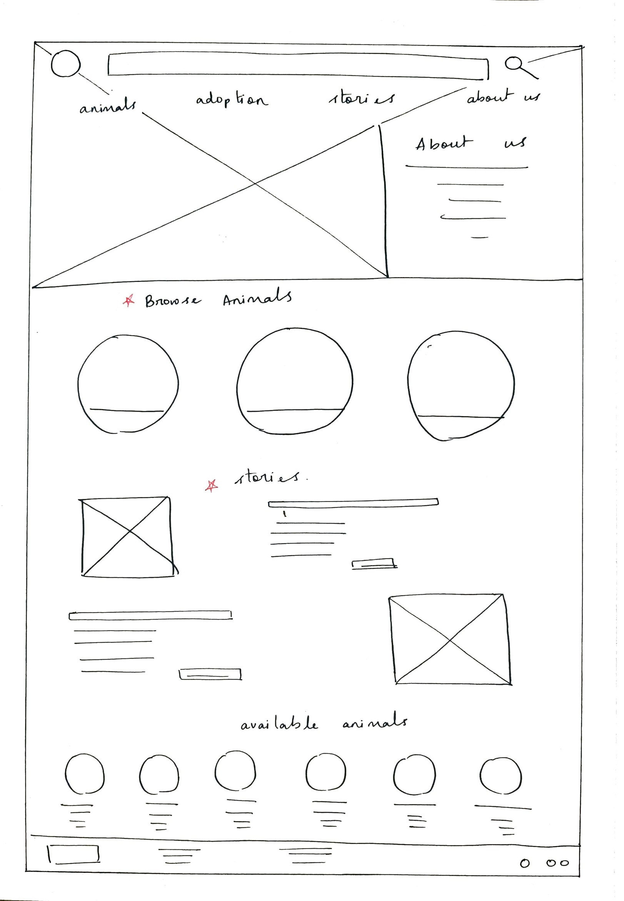
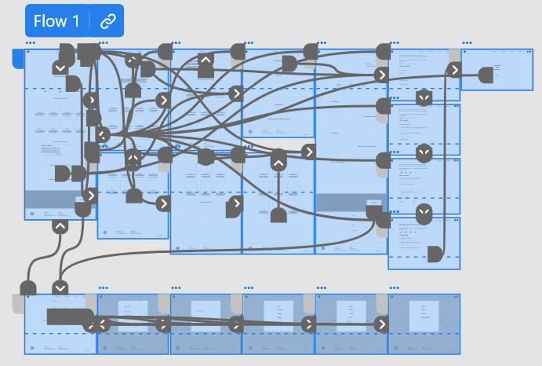

Ideation
Paper Wireframes
I sketched some wireframes on paper to get a clear idea of what I wanted the website to look like.
After some sketching and iterating, I can up with the optimal design for the home page and other pages as well.
I drew stars against the elements that I liked and wanted to include in the final draft of the wireframes.
After some sketching and iterating, I can up with the optimal design for the home page and other pages as well.
I drew stars against the elements that I liked and wanted to include in the final draft of the wireframes.


Digital Wireframes
Once I had an idea about the layout of the website, I moved on to making digital wireframes of the same.
My goal was to make the navigation simple.
All the pages must be accessible from any part of the wesite.
My goal was to make the navigation simple.
All the pages must be accessible from any part of the wesite.
Digital Wireframes for additional screen sizes
As I wanted Pet Family to be a responsive website, I worked on wireframes for a mobile screen
size as well.
Low-Fidelity Prototype
To create the low fidelity prototype I connected all the screens involved in the primary
user flow for the adoption. I took feedback from the users about the flow of the website.

Usability Study Findings
There was no option to send a saved application.
Users wanted to view more than one photo of the animal on the website.
There was no confirmation page once the payment for donation was done.
Based on the feedback I received from the usability study, I refined my designs and made the required changes.